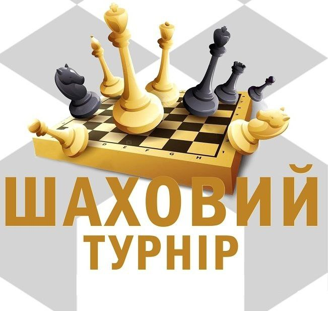

Шахи - це не просто гра, а справжня битва розумів.
На полі 64 клітинки розгортаються запеклі баталії, де кожен хід може стати вирішальним.
Історія шахів сягає глибині століть, а їхні правила зрозумілі навіть дитині.
Проте, щоб оволодіти цією грою, потрібні роки практики та неабиякий талант.
Шахи розвивають логічне мислення, стратегічне планування, концентрацію та вміння передбачати ходи
суперника.
Це не просто розвага, а справжнє мистецтво, яке підкорює мільйони людей по всьому світу.
Відчуйте азарт перемоги, розгадайте хитромудрі комбінації та зануртеся у світ шахів - величну й вічну
гру!